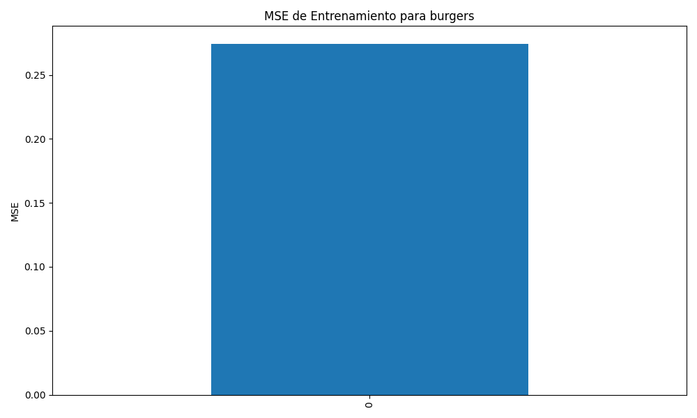

Resumen para Problema Físico: burgers
Generado el 2025-03-05 23:30:47
Modelos Disponibles (1)
pinn
- Épocas: small, LR: 1, Seed: 0.002
Métricas de Entrenamiento
model_name
epochs
learning_rate
final_loss
final_accuracy
training_time
MSE
R2
pinn
small
1
0.3294
0.7846
0.3377
0.2746
0.2724
Gráfico de MSE
